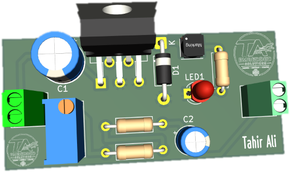
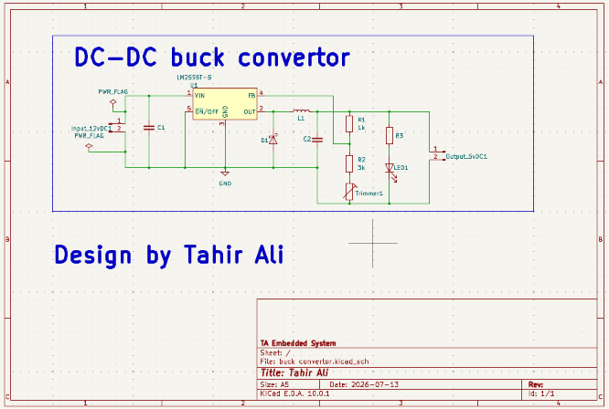
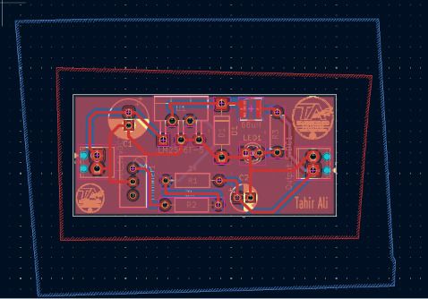
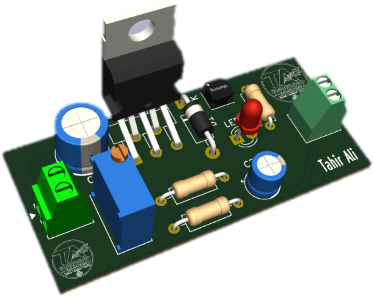

Home / Projects / DC-DC Buck Converter
DC-DC Buck Converter PCB

- Tool
- KiCad
- Regulator
- LM2596T-5
- Topology
- Buck (step-down)
- Input
- 12 V DC
- Output
- 5 V DC, trimmer-adjustable
- Copper
- Poured for power delivery
- Verification
- DRC + ERC
01The challenge
Power boards are less forgiving than digital layouts. Trace widths, thermal relief and pour clearances all have to suit the current the board carries, so the layout was planned around that from the first placement pass.
02My role
- Schematic capture and footprint placement
- Copper pour and routing for the power path
- 3D render for design sign-off
- DRC/ERC verification and Gerber/BOM output
03Engineering approach
- LM2596T-5 switching regulator taking 12 V DC to 5 V DC.
- Trimmer-adjustable feedback network (R1/R2/R3) for output tuning.
- Flyback diode and output capacitor filtering on the switching node, plus a power status LED.
- Copper pour sized and cleared for power delivery.
04PCB design
SchematicRouting3D board



05Verification
ERC and DRC were run and reviewed before Gerber and BOM export. The 3D render was used for a final visual check.
06Final output
- Gerber files and BOM
- Manufacturing output prepared for JLCPCB, PCBWay and OSHPark
07Project result
A power board taken from schematic to manufacturing files, with a trimmable 5 V output from a 12 V input.